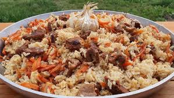

Palow Recipe

Palow the most popular dish in Turkmenistan.
This dish is enjoyed as an ordinary meal of the day as well as served at grand events and celebrations.
Ingredients
-
250gr of rice
-
200ml oil of choice
-
500gr of meat (lamb or beef recommended)
-
200gr of carrots
-
one head of garlic
-
salt
-
water
Steps
-
Cut meat into chuncks and set aside.
-
Peel the carrots and cut into long thin slices and set aside.
-
Wash the rice with cold water until transparent and set aside.
-
Get a non-stick pot, heat it up on the stove and add the oil.
-
Toss the meat in and fry on high heat.
-
Toss in the carrots and fry until half cooked.
-
Add the rice and pour the same amount of water (make sure the rice is evened out and it is submerged in water). Add a table spoon of salt.
-
Place the lid on the pot and cook on high heat until the water boils.
-
Once the water boils reduce the heat, add the garlic in the center and close the lid. Cook on low heat for 15-20 minutes.
-
Check the rice. If it is almost cooked, turn off the heat and steam for 10 minutes.
-
Check back on rice. Taste. Should be cooked and seasoned by now.
-
Serve meat and carrots on top of rice.
-
Enjoy!